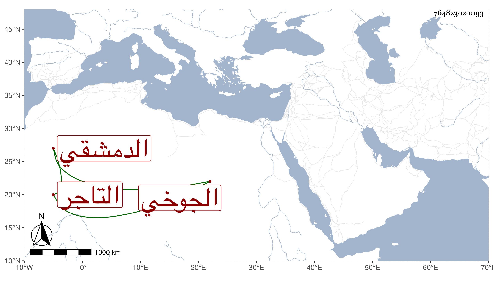

0902Sakhawi.DawLamic.ITO20230111-ara1.EIS1600.764823020093
Biography ID: 764823020093
15
محمد بن محمد بن محمد بن يوسف بن علي بن يوسف بن عياش بتحتانية ثقيلة ومعجمة الشمس الدمشقي الجوخي التاجر أخو أحمد الماضي وهذا أسن . ولد في سنة ثلاث أو أربع وأربعين وسبعمائة وأحضر في الخامسة على أبي الحسن علي ابن العز عمر بن أحمد بن عمر بن سعد المقدسي جزء ابن عرفة بحضوره له في الثالثة على ابن عبد الدائم وكذا سمعه على ابن الخباز وحدث به سمعه منه الفضلاء كابن موسى وشيخنا الموفق الأبي . وذكره شيخنا في معجمه وقال أجاز لي وكان يضرب به المثل في الشح ، وقال في إنبائه : وكان ذا ثروة واسعة وتحكى عنه غرائب من شحه . مات في رمضان سنة خمس عشرة . وتبعه المقريزي في عقوده بإسقاط ثالث المحمدين خطأ سامحه الله وإيانا .
